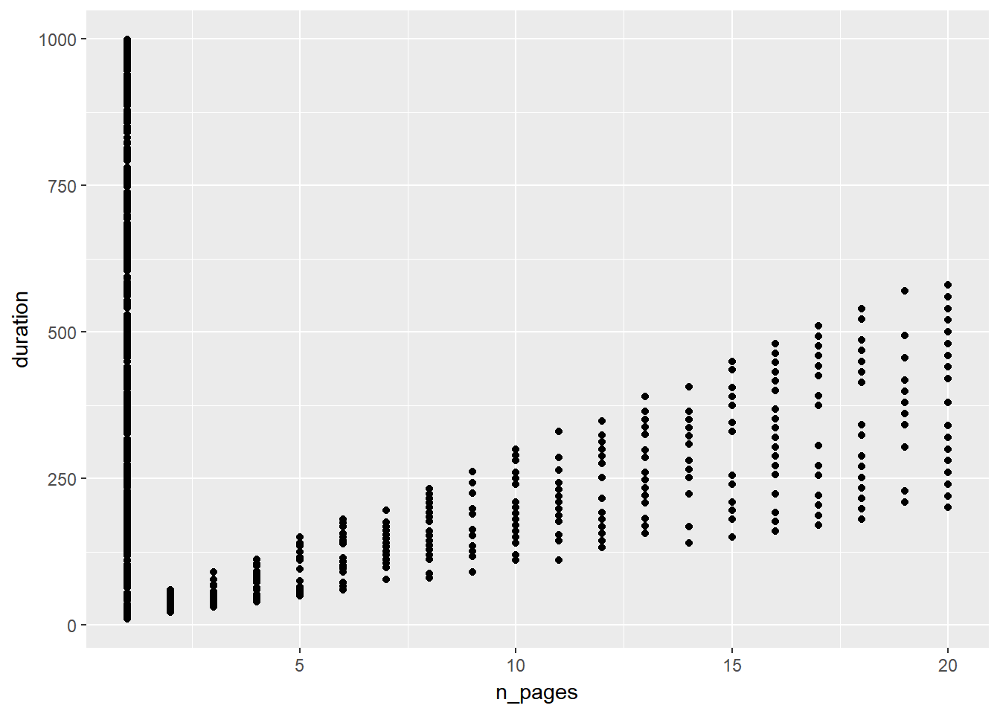
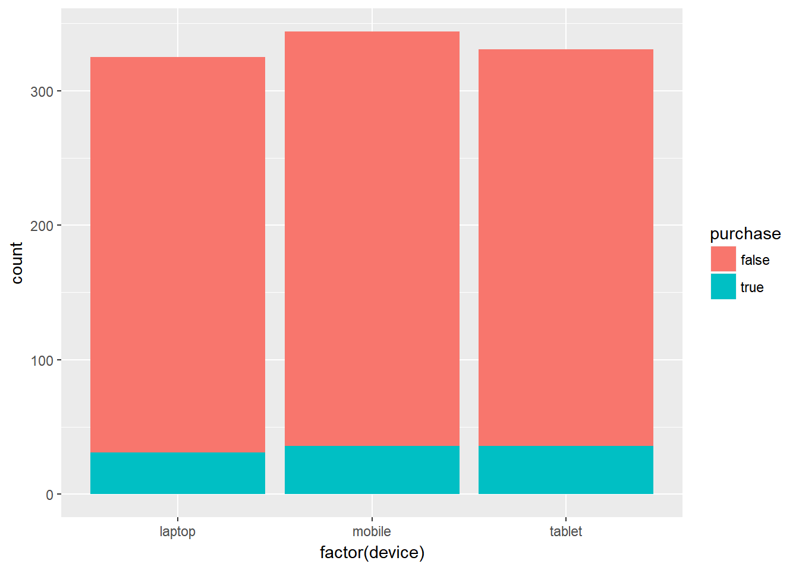
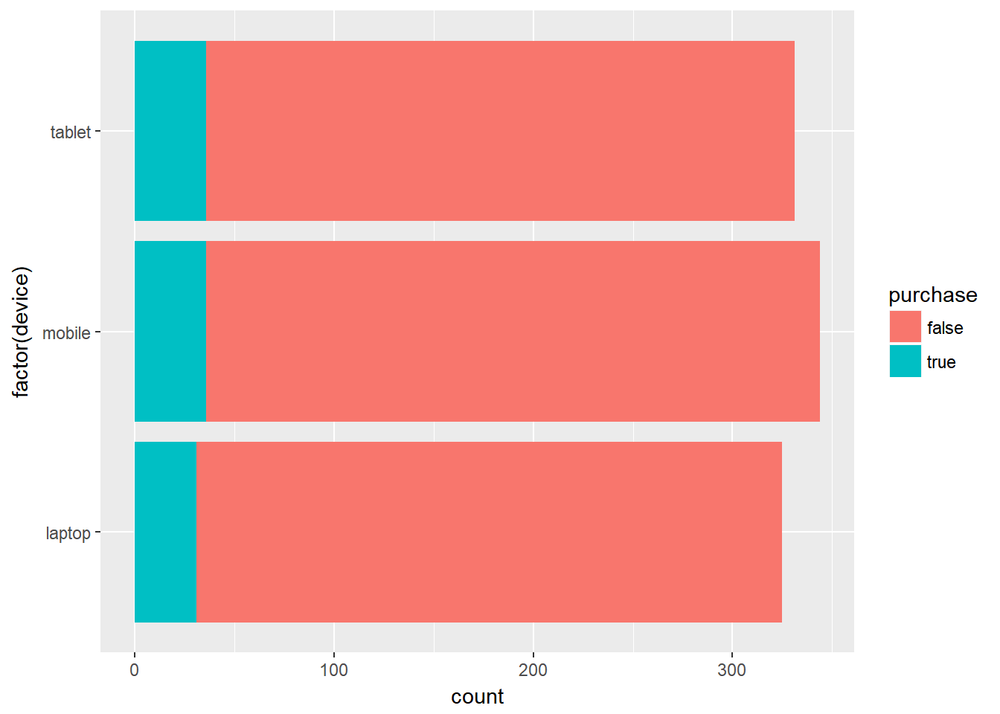
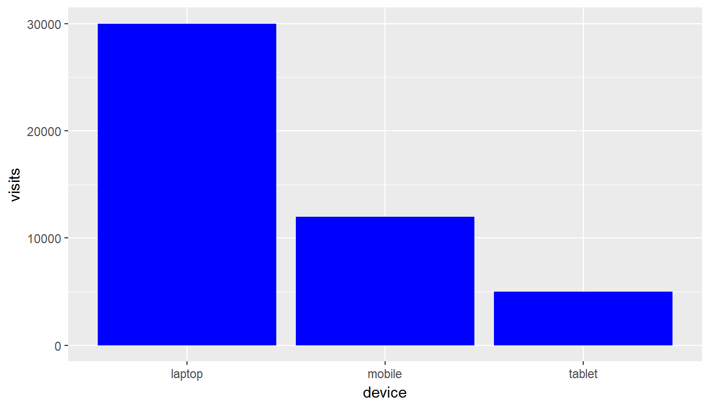
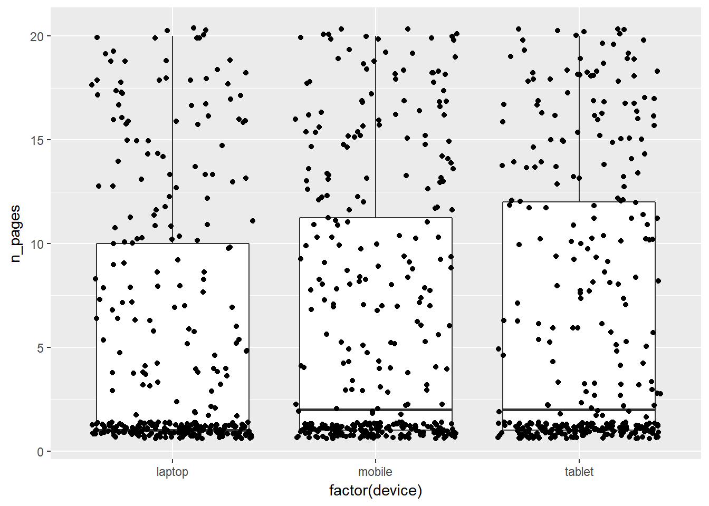
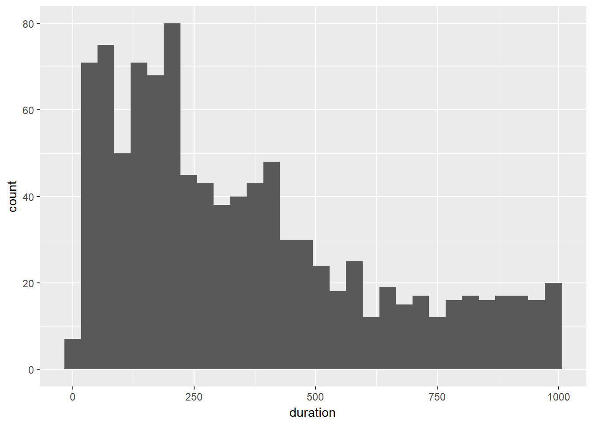
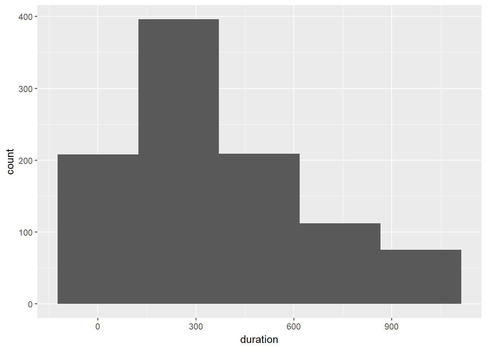

Introduction
This is the third post in the series Elegant Data Visualization with ggplot2. In the previous post, we learnt how to create plots using the qplot() function. In this post, we will create some of the most routinely used plots to explore data using the geom_* functions.
Point
Let us say we want to visualize the relationship between two continuous variables. For example, as visitors browse more pages on a website, the time spent on the website also increases. We cannot say that more time spent on a website indicates more page visits as some of the visitors might have spent a lot of time on a couple of pages or might have been idle. Using the ecommerce data, we will look at the relationship between number of pages visited and time on site. Now the best way to represent this relationship is a scatter plot i.e. represent the data using points.
You can download the data from here or import it directly using read_csv() from the readr package.
## Parsed with column specification:
## cols(
## id = col_integer(),
## referrer = col_character(),
## device = col_character(),
## bouncers = col_character(),
## n_visit = col_integer(),
## n_pages = col_double(),
## duration = col_double(),
## country = col_character(),
## purchase = col_character(),
## order_items = col_double(),
## order_value = col_double()
## )ggplot(ecom, aes(x = n_pages, y = duration)) +
geom_point()
We can fit a regression line or add horizontal or vertical lines to the plots using
geom_abline()geom_hline()geom_vline()
You can add a vertical line using the geom_vline() function. The main argument of this function is xintercept which specifies the value on the X axis where the line must be drawn.
ggplot(mtcars, aes(x = wt, y = mpg)) +
geom_point() +
geom_vline(xintercept = 5) 
The geom_hline() function can be used to add a horizontal line.
ggplot(mtcars, aes(x = wt, y = mpg)) +
geom_point() +
geom_hline(yintercept = 30) 
To fit a regression line to the plot, use the geom_abline() function. You need to specify values for the intercept and the slope.
ggplot(mtcars, aes(x = wt, y = mpg)) +
geom_point() +
geom_abline(intercept = 10, slope = 1)
Another way to fit a regression line to the plot is geom_smooth(). You need to specify the regression type using the method argument. You can choose to display the confidence intervals for the fitted values by setting the se argument to TRUE or FALSE.
ggplot(mtcars, aes(x = wt, y = mpg)) +
geom_smooth(method = 'lm', se = TRUE)
ggplot(mtcars, aes(x = wt, y = mpg)) +
geom_smooth(method = 'loess', se = FALSE)
We can modify the color, type and width of the lines but we will learn about them in the next post.
Bar
Continuing with our ecommerce website, let us say we want to know the distribution of the referrers or the devices. Such information is best displayed using bar plots. Use the geom_bar() function to create grouped/stacke bar plots.
ggplot(ecom, aes(x = factor(device))) +
geom_bar()
Suppose you want to visualize the total revenue from different devices, you can map the variable to the Y axis.
ggplot(ecom, aes(x = factor(device))) +
geom_bar(aes(weight = order_value))
If you want to get a breakdown of the purchasers/non-purchasers for different device types, create a stacked bar plot.
ggplot(ecom, aes(x = factor(device))) +
geom_bar(aes(fill = purchase))
To create horizontal bar plots, use the coord_flip() function. As the name indicates, it flips the X and Y coordinates.
ggplot(ecom, aes(x = factor(device))) +
geom_bar(aes(fill = purchase)) +
coord_flip()
Sometimes you have data in a tabular format. In such cases, you can use the geom_col() function.
device <- c('laptop', 'mobile', 'tablet')
visits <- c(30000, 12000, 5000)
traffic <- tibble::tibble(device, visits)
ggplot(traffic, aes(x = device, y = visits)) +
geom_col(fill = 'blue') 
Boxplot
If you want to examine the distribution of a variable or detect outliers, boxplots are very handy. Let us look at the distribution of number of pages visited for different device types using the geom_boxplot() function.
ggplot(ecom, aes(x = factor(device), y = n_pages)) +
geom_boxplot()
Use the geom_jitter() function to overlay the observations on the boxplot.
ggplot(ecom, aes(x = factor(device), y = n_pages)) +
geom_boxplot() +
geom_jitter()
We will learn about modifying the appearance of the boxplot and the outliers in the next post.
Histogram
Histograms are useful for examing the distribution of a continuous variable. Let us look at the distribution of time spent on the site using the geom_histogram() function and examine if it is skewed.
ggplot(ecom, aes(x = duration)) +
geom_histogram()## `stat_bin()` using `bins = 30`. Pick better value with `binwidth`.
Specify the number of bins using the bins argument.
ggplot(ecom, aes(x = duration)) +
geom_histogram(bins = 5)
Line
Line charts are useful for visualizing trends or changes in metrics over a period time. Use the geom_line() function to plot the conversion over several quarters.
Jitter
We used the geom_jitter() function to overlay observation on the boxplot.
ggplot(ecom, aes(x = factor(device), y = duration)) +
geom_jitter()
Change the width and height to get a better overview.
ggplot(ecom, aes(x = factor(device), y = duration)) +
geom_jitter(width = 0.25, height = 0.5)
Label
ggplot(mtcars, aes(disp, mpg, label = rownames(mtcars))) +
geom_text(check_overlap = TRUE, size = 2)ggplot(mtcars, aes(disp, mpg, label = rownames(mtcars))) +
geom_label()ggplot(mtcars, aes(x = disp, y = mpg, label = rownames(mtcars))) +
geom_point() +
geom_text(aes(color = cyl), hjust = 0, nudge_x = 0.05,
size = 2, angle = 45)```